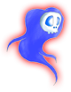

- Welcome to Touhou Wiki!
- Please register to edit. For assistance, check in with our Discord server or IRC channel.
Vengeful spirit
Vengeful spirit Evil Spirit, Akuryou (悪霊) | |
|---|---|
|
 Portrait of a vengeful spirit in Subterranean Animism
| |
| Location | |
Notable Members | |
Appearances | |
| Official Games | |
| |
A vengeful spirit (怨霊 onryou) is a special type of ghost created under special circumstances. When a person dies, they must wait on the Sanzu River for a shinigami to ferry them across. However, if a youkai steals their body away before they cross the river, that person will become a vengeful spirit. Unlike normal ghosts and phantoms, vengeful spirits are hot to the touch.
Sub-Species[edit]
Akuryou[edit]
An Akuryou (悪霊) is another kind of evil spirit, referenced in Embodiment of Scarlet Devil briefly by Reimu Hakurei.
Vengeful spirits in Touhou[edit]
In Wild and Horned Hermit, Kasen Ibara describes them as criminal spirits, those that committed sins while alive. These vengeful spirits were confined to the Former Hell, but leaked back to the surface due to the acts of Rin Kaenbyou, who learned how to control them. Vengeful spirits are feared by humans and youkai alike throughout Gensokyo.
Recently, the Underground Geyser Center has been plagued by these vengeful spirits.
Not to be confused with normal ghosts and poltergeists, vengeful spirits appear to only take on a non-human form, but the Zombie Fairies in Rin's offensive lineup may also be vengeful spirits, and Soga no Tojiko is described in Symposium of Post-mysticism as a vengeful spirit who is losing her grudge and becoming a simple thunder-causing ghost. In the prologue to Subterranean Animism, they are referred to as earth spirits (地霊 chirei), but in all the dialogue, as well as the extra story, they are referred to as onryou. Their appearance mostly involves a skull in a form of a spirit.
Mima is described to be an Akuryou in her profile in Mystic Square, as well as been the only one known to be this type so far. Also, this type was reference once again on the first stage of Embodiment of Scarlet Devil by Reimu Hakurei and again on Chapter 25 of Curiosities of Lotus Asia by Reimu.
Vengeful Spirit's Appearances[edit]
Windows[edit]
- Subterranean Animism
Vengeful spirits first appeared on stage 4 of Subterranean Animism, supporting Rin Kaenbyou during her miboss appearances as a cat. On stage 5, they independently come in groups and cause an explosion of danmaku towards the player if destroyed. They are again supporting Rin during her battles on the stage. On stage 6, they'll some scrolling down the screen in long queues. Strangely, they are not shown to have a skull. Despite their similarities on their sprites, they are not to be confused with the divine spirits in Ten Desires.
Spin-offs[edit]
Vengeful spirits appeared as a background cameo in Hopeless Masquerade on the Palace of the Earth Spirits stage, doing nothing but floating there.
Gallery[edit]
Rin Kaenbyou, surrounded by vengeful spirits in Subterranean Animism
First occurrence of vengeful spirits, as seen in Subterranean Animism
Additional Information[edit]
- In the data files for Hopeless Masquerade, the spirits were named "dokuro" (髑髏, in kanji form), which means "skull".
See Also[edit]
- Wikipedia entry for Onryou